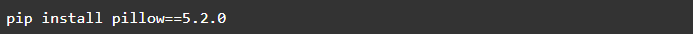
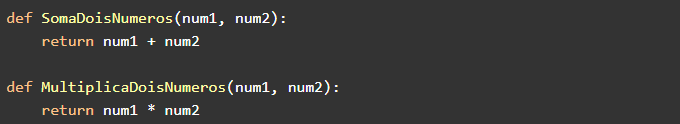
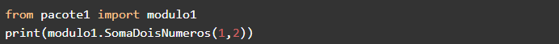
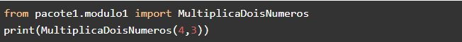
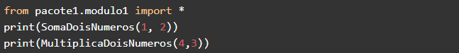
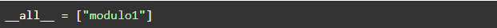
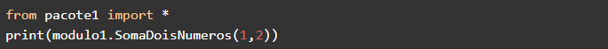
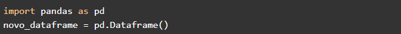

As bibliotecas, também chamadas de pacotes, basicamente são um conjunto de módulos
(que são simples arquivos de código) que facilitam o desenvolvimento de novos projetos
de software. A ideia por trás delas é pegar um código que está se repetindo com frequência
e encapsular ele para ser usado futuramente em diferentes programas. Com isso, você pode
criar e utilizar as suas próprias ou instalar bibliotecas de terceiros. Nesse artigo,
vamos ver com mais detalhes como isso pode ser feito utilizando a linguagem Python.
➤ Gerenciadores de pacotes
Antigamente era comum instalar bibliotecas como qualquer outro programa e adicioná-las
manualmente no seu código, porém, com múltiplos desenvolvedores trabalhando
simultaneamente nos mesmos projetos e a necessidade de escalar rapidamente os serviços,
surgiu a demanda para a criação de um sistema de gerenciamento de pacotes para organizar
o código e agilizar no processo de desenvolvimento.
Podemos dividir os gerenciadores de pacotes em dois tipos: aqueles do sistema operacional
(que são utilizados para instalar todo tipo de software, não especificamente voltado para
programação) como no caso do Linux que temos o APT e aqueles voltados a linguagens de
programação específicas, como o NPM ou o Yarn para Javascript e o Pip ou Conda para Python.
➤ Como instalar e importar no Python
A instalação de bibliotecas no python com o gerenciador de pacotes pip é feita a partir
do seguinte comando no terminal:
Você também pode optar por escolher uma versão específica de uma biblioteca, basta colocar
dois sinais de igual e em seguida o número da versão:

➤ Criando seus próprios módulos e pacotes
Agora faremos um simples exercício criando nossa própria biblioteca para praticar a importação e
evitar os erros "ModuleNotFoundError” e “NameError”.
Primeiro crie uma pasta chamada de “pacote1”, depois um arquivo python chamado “modulo1”
dentro dela com o seguinte código:

Essas funções são bem simples e autodescritivas, uma soma e a outra multiplica dois números,
vamos utilizá-las para testar nosso sistema. Essa estrutura que acabamos de criar, já pode ser
considerada uma biblioteca acima das versões 3.x do Python, basicamente é só uma pasta com
arquivos Python.
Nas versões mais antigas do Python 2.x utilizava-se um arquivo vazio chamado “__init__.py”, e
era através dele que a linguagem identificava que aquela pasta era um pacote Python. Nas
versões mais recentes esse arquivo não é mais obrigatório, mas normalmente ainda é utilizado
para manter a compatibilidade.
Agora crie outro arquivo Python um nível acima (fora da pasta pacote1), chamado “main.py”, e
nele utilizaremos as funções no módulo 1 da biblioteca que acabamos de criar. Primeiro com o
método de importar todo o módulo:

Se tudo estiver correto, ao executar, no terminal aparecerá o resultado da soma.
Transforme esse código em comentário e utilize o método de importar as funções do módulo
diretamente da seguinte forma:

No terminal deve aparecer o resultado da multiplicação, você também pode importar todas as
funções e classes de um determinado módulo apenas substituindo o nome da função por um
asterisco:

Ao executar, devem aparecer ambos, o resultado da soma e da multiplicação. Essa notação
também pode ser utilizada para importar todos os módulos presentes em uma biblioteca,
mas primeiro é necessário criar o arquivo “__init__.py” dentro da pasta pacote1 e dentro
dele vamos atribuir o nome de cada módulo em uma lista para a variável “__all__”:

Se tivéssemos outros módulos, bastava adicionar na lista. Agora podemos utilizar a
seguinte notação para trabalhar com esse módulo:

Uma prática bastante comum também é encurtar o tamanho do nome dos pacotes nos imports
através do comando 'as', assim evita ter que escrever o nome todo quando for usar,
veja o exemplo encurtando a biblioteca Pandas:

Vale ressaltar que na hora que for instalar e importar bibliotecas de terceiros, verificar
sempre se o nome e a versão são exatamente iguais ao da biblioteca com a qual você está
querendo trabalhar, pois podem haver bibliotecas com nomes parecidos e na hora de importar
pode dar erro caso tenha instalado a errada.